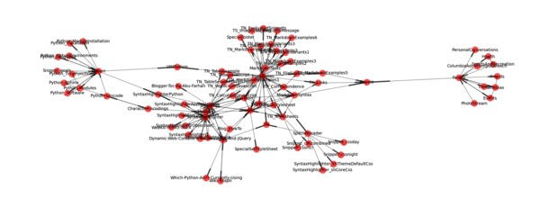
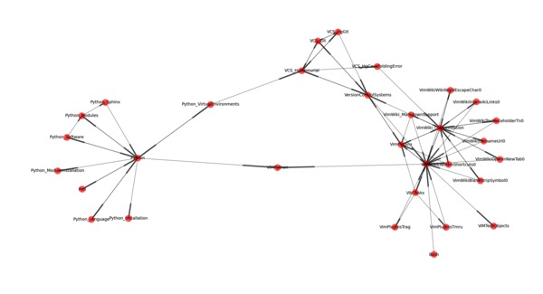
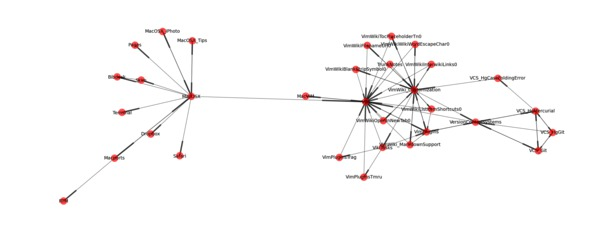

Wiki Graph - A Visualization Tool For Wikis
>%hdrrelated% ># Related > * [Python_WikiGraph] > * [Blog]
Reflecting upon personal and community wikis, I realized that I had little insight into general patterns of linking that they followed. This prompted a cursory expidition on Wikipedia, where I found the following quote, attributed to Vannevar Bush, 1945.
"Wholly new forms of encyclopedias will appear, ready-made with a mesh of associative trails running through them, ready to be dropped into the memex and there amplified." - Vannevar Bush1
What great vision! To develop a better understanding of the "mesh of associative trails" embedded in my personal wiki, I decided to create some basic visualizations.
WikiGraph is a tool that I wrote in Python to extract and visualize the hyperlink structure from a collection of wiki pages. Below is an example of the output it generates. Pages are represented by nodes whose labels consist of the page title, and links from one page to another are directed edges.

Usage
WikiGraph can be used to quickly visualize a wiki. The image displayed above was generated with the following command:
wikigraph.py --directory $NOTES \
--extension txt \
--layout sfdp \
--labels \
--tags Fun Family Events Exercise Health TrunkNotes Python Javascript \
--numcomponents 1 \
--figdpi 200 \
node_size 80 font_size 5 width 0.5 alpha 0.7
WikiGraph makes several assumptions:
Pages are stored at the top level of a directory with a common extension.
Wiki-links are encoded using a
[[name]]syntax, wherenamematches the linked file's basenamePages may include optional keyword metadata encoded on a header line with syntax:
^Tags: tag1 [, tag2 [, ..., tagN]]$Tags may be used to filter the wiki to produce subgraphs of a manageable size.
WikiGraph only captures local links. Links to other local (non-wiki) resources and external URLs are not shown. In my wiki, external links slightly outnumber internal ones.
The following display captures the core functionality. It scans a wiki, extracts links and tags, filters and prunes the resulting graph, and draws it.
WG = WikiGraph()
WG.add_pages(get_files_from_path_with_ext(DIRECTORY, EXTENSION))
WG.add_links()
if not(KEEPUNKNOWN):
Nrm_nodes = WG.prune_unknown_paths()
print "Removed {} nodes with unknown paths".format(Nrm_nodes)
if len(TAGS) > 0:
tagset = set(TAGS)
WG.add_tags()
Nrm_nodes = WG.filter_by_tag(ALLTAGS, tagset)
print "Removed {} nodes not related to tags: '{}'".format(Nrm_nodes, str(TAGS))
if NUMCOMPONENTS>0:
Nrm_nodes, Nrm_comp = WG.prune_ccomponents(NUMCOMPONENTS)
print "Removed {} nodes from {} smallest components".format(Nrm_nodes, Nrm_comp)
if not(KEEPISOLATES):
Nrm_nodes = WG.prune_isolates()
print "Removed {} isolated nodes".format(Nrm_nodes)
WG.draw(layout=LAYOUT, labels=LABELS, **KWARGS)
WikiGraph has many configurable parameters which are listed in uppercase in the display above. Further details are included in the program's help text, shown below
usage: wikigraph.py [-h] [--verbosity VERBOSITY] [--directory DIRECTORY]
[--extension EXTENSION] [--keepunknown] [--keepisolates]
[--numcomponents NUMCOMPONENTS] [--tags [TAGS [TAGS ...]]]
[--alltags]
[--layout {mpl,circ,spec,neato,twopi,fdp,sfdp}] [--labels]
[--figalpha FIGALPHA] [--figdpi {72,100,200,300}]
[--figtype {png,pdf,ps,eps,svg}] [--output OUTPUT]
Extract and visualize the link structure of a wiki
optional arguments:
-h, --help show this help message and exit
--verbosity VERBOSITY
Level of verbosity for logging
--directory DIRECTORY
Directory where files containing wiki pages are stored
(flat)
--extension EXTENSION
Extension of files containing wiki pages
--keepunknown Whether to keep linked pages if no corresponding file
is found
--keepisolates Whether to keep isolated pages
--numcomponents NUMCOMPONENTS
Number of largest connected components to keep (0
selects all)
--tags [TAGS [TAGS ...]]
Tags to filter
--alltags If true, only returns pages that contain ALL tags
--layout {mpl,circ,spec,neato,twopi,fdp,sfdp}
The layout algorithm to use (from graphviz, etc.)
--labels Whether to show labels in displays
--figalpha FIGALPHA Transparency level for figure background
--figdpi {72,100,200,300}
DPI for saved figure
--figtype {png,pdf,ps,eps,svg}
Type of saved figure
--output OUTPUT Prefix of saved figure
Additional arguments pairs are passed to the drawing routine as keyword-values
(floats assumed).
The code for WikiGraph is on GitHub. Beyond several standard packages, it depends on matplotlib and networkx.
Discussion
After using WikiGraph for only a short while, I confirmed several opinions that I had about my wiki, and formed some new ones. For instance, the creation of hyperlinks between related projects allows for easy recall, and quick transitioning between tasks. The example above shows that my wiki captures important real-life relationships; my bicycle page acts as a bridge between work- and family-related pages. Additionally, as is evident, the link structure does not appear to follow a clear hierarchical structure; instead, many local hubs and authorities are evident.
Here are two additional examples summarizing the Prog and Software tags, respectively:


While link creation has been simplified by editors and lightweight markup syntaxes, to a degree, the size of the benefit of maintaining a wiki reflects the amount of time invested. This raises the question: Can the ongoing maintenance of a wiki, and especially its link structure, be automated in some manner? Perhaps there is a way of harnessing existing wikis, knowledge databases, or ontologies to automatically link wiki pages. After all, there are continuing and new efforts to build structured databases of various sorts. A recent example is Freebase, described here and here. Based on my initial observations, harnessing this knowledge could work insofar as it could predict hubs and authorities, as opposed to hierarchical structure. A related problem has recently been addressed in this paper.
Notes [1] : Bush, Vannevar: "As We May Think." The Atlantic Monthly. July 1945. Reprinted in Life magazine September 10, 1945.
blog comments powered by Disqus